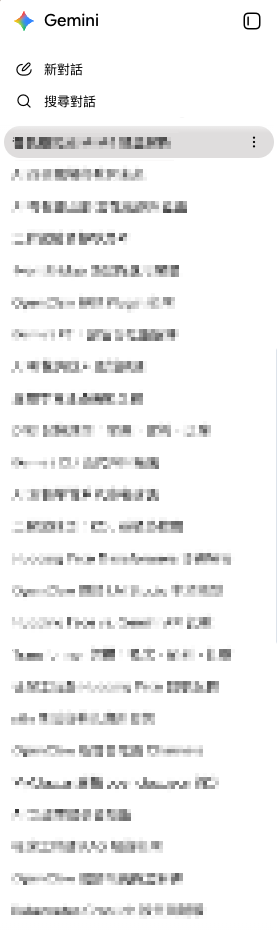
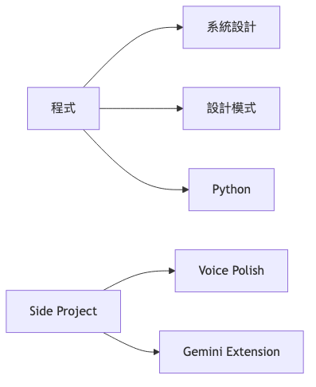
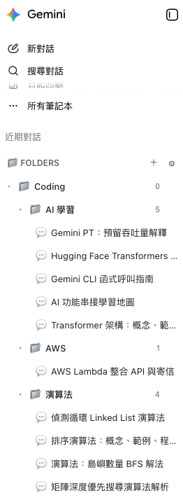
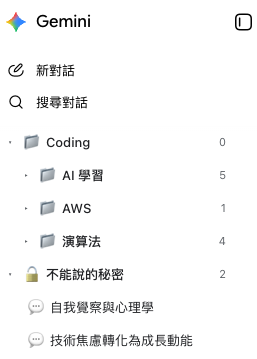
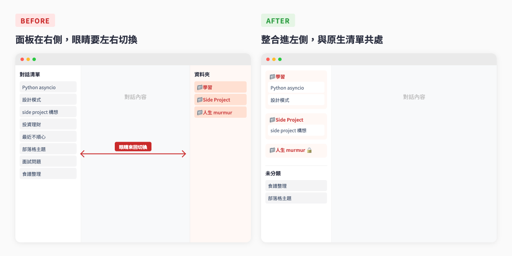

[一言不合自己寫 2] 幫 AI 對話加上「資料夾分類」功能
前情提要
我很常想到什麼就跟 AI 開始瞎聊（我想大家都一樣 XD）
跟它聊「Python 的 asyncio 該怎麼用」是一個對話，跟它聊「最近想學的 AI 工程技能」是另一個對話，跟它討論「下次 side project 想做什麼」又是另一個對話。一天下來開個 5、6 個對話算正常，轉眼間已經一堆過往的對話在那邊了。

看到上面，身為分類整理控的自己，讓一堆對話清單散在那邊，其實全身亂不舒服的。
因此覺得如果 AI 的對話列表也可以分組就好了。
另外，還有另一個煩惱：有些對話我不太想讓路過的人瞄到。
跟 AI 聊天聊久了會發現，它其實是個很好的樹洞 ——
最近工作不順心、人生卡關、自我懷疑這種比較內心的話題，我都會找它聊。
這種對話的標題往往很直白（「如何變得更有自信」這種），擺在側邊欄上，家人從旁邊走過瞄一眼就尷尬死。
因此希望可以再加上隱藏上鎖資料夾功能
帶著上述的兩個需求，我去上網翻了一輪。
發現市面上其實有幾個解這個問題的工具。但有的要付費——為了「分個資料夾」這件事每個月付費，好像覺得 CP 值不太高。
有看到免費的 extension 要安裝的時候，有考量到對話內容就是這麼私密的東西，丟給不知道是誰寫的 extension 來幫我整理，總覺得不太放心。
（其實上次做 Voice Polish 也是同樣的顧慮，語音轉文字也算私密的東西，那時候才決定自己寫一個。）
現在有什麼願望想許願，就可以請 AI 弄個玩具來試試看。
於是就有這個《AI 聊天對話資料夾》的小玩具誕生了！
《AI 聊天對話資料夾》是什麼？
針對上述需求，這個小玩具的主要目標是：
在 Gemini 和 Claude 的對話列表，加上群組分類功能，再順便多一個可以上鎖隱藏的私人資料夾
是 Edge / Chrome 的 extension，目前支援 gemini.google.com 和 claude.ai。
（自己主要是用 Gemini 和 Claude，ChatGPT 自己用得比較少，之後有需求再加。）
功能介紹
分資料夾整理對話
資料夾我刻意做成兩層 —— 第一層是大分類，第二層是底下的細分。
因為我想要有「程式」底下，還有「系統設計」、「設計模式」、「Python」等等的資料夾分類，因此先拆了兩層出來。

歸到資料夾的對話會從原生側欄消失，只出現在它所屬的資料夾裡，不會兩邊重複，看起來乾淨許多。

上鎖隱藏：給內心的對話一個位置
回到前面那個「樹洞」場景。
設定主密碼之後，就可以把某個資料夾標記為「上鎖」。
鎖起來的資料夾——以及它底下所有對話——會從 UI 上完全消失。
不是只把標題遮起來、不是只把對話內文打馬賽克，是整個資料夾跟對話都不見、像沒存在過一樣。
要顯示這些隱藏內容的話，按下自己設定的快捷鍵，輸入設定的主密碼，就整個解鎖。

如果有人突然出現怎麼辦 ── ！？
放心！瀏覽器重新整理後，這些隱藏資料夾就會消失了。
不過這邊的「上鎖」是 UI 隱藏，不是加密。
為的只是以防那種「家人朋友從旁邊路過隨手翻」這種的狀態。
對我自己來說這個強度剛好夠用了——我要防的本來就只是「身邊的人不小心看到」，不是要藏什麼見不得人的東西，只是內心對話希望保留一點隱私而已。
跨裝置同步：換電腦也不用重設
我有時候在家用 Mac、還有其他台筆電，所以資料夾結構一定要能跨裝置同步。
這部分用的是 Chrome / Edge 內建的 chrome.storage.sync——只要你的瀏覽器有登入帳號，這個 API 就會自動幫你同步小型設定資料到雲端（綁瀏覽器帳號，免費、沒上限對我這種使用量也夠）。
換電腦只要：
- 同一個瀏覽器帳號登入
- 安裝這個 extension
- 資料夾結構就會自動跑過來
不用註冊、不用我自己架後端、不用申請 API Key、不用設密碼以外的任何東西。
順帶一提，這個專案一開始我其實有用 Cloudflare Workers 自架了一個 sync 後端，後來發現 chrome.storage.sync 已經完全夠用，就把整個後端拔掉了。
少維護一個東西（對，我就懶～）
為什麼整合在左側的原生對話列表
這部分算是一個有點掙扎的設計決定，順便講一下。
最一開始我把資料夾面板放在 Chrome 的 side panel（瀏覽器最右側那條）。理由是技術上最單純——side panel 是 Chrome 官方支援的 extension UI 介面，不用跟原生網頁的 DOM 搶位置，相對穩定。
實際用了兩三天就發現很卡。
左邊是 Gemini / Claude 的原生對話清單，右邊是我的資料夾面板。
每次想找一個對話，眼睛要從左飄到右、右飄到左，像在看雙螢幕，腦袋很累。
如果你想到要把某個對話移到資料夾，還得先在左邊找到對話、再到右邊找到目標資料夾 ——
兩個 UI 完全沒有交集，等於把問題從「找對話」變成「找對話 + 找資料夾」。

後來改成把資料夾區整合進原生左側 sidebar 的最上方，跟原生對話清單共用同一個區塊。
因為已經習慣聊天列表在左側，使用者的肌肉記憶早就建立好了，這樣做最不違和。
實作上有一點麻煩——Gemini 和 Claude 的左側 sidebar 是它們自己 framework 渲染的 DOM，會在 SPA route 切換時被重新 mount。
所以 AI 用 MutationObserver 監聽，被拔掉就 re-mount 回去。實測下來穩定度還行。
技術 Stack
不寫太多技術細節，這篇主要還是想分享產品本身。
- Manifest V3 Edge / Chrome extension
- TypeScript + Vite + CRXJS（CRXJS 是個讓 Vite 可以打包 extension 的 plugin，蠻好用的）
- chrome.storage.sync 跨裝置
- 純前端，沒有後端
整個 extension 從許願開始大概不到一天開發完成 MVP，後來試用後覺得不滿意，再繼續調整一路到現在。
中間 spec → plan → implementation 的工作流是用 Claude Code 跑的，這部分就是 Vibe Coding 的一環，等於 AI 幫我寫了大部分的 code，我負責驗收、指方向、debug。
後記
呼，目前的功能差不多告一段落了。
基本上已經完成自己最一開始的兩個許願了。
有了 AI 不合理的執行速度後，老實說自己看了也覺得這個節奏蠻誇張的。
如果是過去沒有 Vibe Coding 的時候自己手 key，我大概兩三個月也未必能做出來 —— 畢竟這是業餘時間在弄的東西。
這次跟做 Voice Polish 那次最大的差別，是這次更認真地用了「先寫 spec、再寫 plan、最後 implementation」的流程（透過 Claude Code 跑的）。
專案 repo 裡的 docs/superpowers/specs/ 和 docs/superpowers/plans/ 都還在，每個 feature 都先把設計討論清楚、寫成文件、commit 進 git，再開始動手。
這套流程的好處是 AI 不會亂跑——它有 spec 可以對齊、有 plan 可以照走，產出的 code 跟我心裡想的版本差距小很多，幾乎不用大改。
不過整體來說，現在打開 Gemini 看到對話側邊欄整整齊齊分好資料夾、心裡的對話安心地鎖在自己的小角落，那種感覺挺爽的。
不過老實說，我還是期待哪一天 Gemini 可以真的出資料夾功能啦。這個外掛就可以功臣身退了。
這篇文章紀錄成分居多，如果你居然有看到這裡的話，真的是十分感謝！
我們下次見，Bye ～